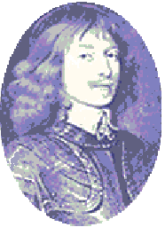

The Haughs o' Cromdale
Les prairies de Cromdale
Battles of Auldearn: 9th May 1645 and of Cromdale: 30th May 1690
From Joseph Ritson's "Scotish Songs", volume II, N°10, 1794,the "Scots Musical Museum" Vol V N°488 page 502, 1796,
and Hogg's "Jacobite Reliques" Volume N°2, 1821
Tune - Melodies
"The Haus of Cromsale" from J. Ritson's "Scotish Songs" (1794)
Sequenced by Christian Souchon
Sheet music- Partition
|
To the tune:
- John Glen (1891) finds the earliest printing of the tune in Angus Cumming's 1780 " Collection of Strathspeys or Old Highland Reels" , page 15, - though it also appeared in print the same year in Alexander McGlashan’s Collection of Reels as “Merry Maid’s Wedding.” - Creighton and Calum McLeod (1979) find it earlier in Scotland in the Margaret Sinclair Manuscript (c. 1710) under the title “New Killiecrankie ,” - and Dunlay and Greenberg report it was said to be in an older manuscript under the title “Wat ye how the play began.” “As I came in by Auchindown” is one common ballad sung to this air. Source "The Fiddler's Companion" (cf. Liens). Joseph Ritson in his "Scotish Songs" (1794) states: "[tune] from a manuscript copy collated with a common stall print". - Another song beginning with "At Auchindown, the tenth of June ..." is sung to a similar tune ("Cauld Kail in Aberdeen"), - whereas the Corries sing the present text to a tune similar to "Johnnie Cope" (see below). |
 |
A propos de la mélodie:
- John Glen (1891) estime que cette mélodie fut imprimée pour la première fois par Angus Cumming , en 1780, dans sa "Collection de Strathspeys ou d'anciens reels des Highlands" , pg. 15, - bien qu'on la trouve la même année dans la "Collection de Reels" d' Alexandre McGlashan sous le titre "La Joyeuse mariée". - Creighton et Calum McLeod (1979) la découvrent bien plus tôt, en Ecosse, dans le Manuscrit de Margaret Sinclair (vers 1710) sous le titre “Nouveau Killiecrankie ,” - et Dunlay and Greenberg rapportent qu'il figure dans un manuscrit plus ancien sous le titre “Savez-vous comment tout a commencé?" “J'allais enter à Auchindoun” est une ballade parmi d'autres sur cet air. Source "The Fiddler's Companion" (cf. Liens). Joseph Ritson dans ses "Scotish Songs" (1794) note: "[mélodie] tirée d'une copie manuscrite collationnée avec un imprimé du commerce". - Un autre chant qui commence par "Auchindoun vient en ce dix juin ..." se chante sur une mélodie analogue ("Cauld Kail in Aberdeen"). - tandis que les Corries chantent le présent texte sur un air similaire à "Johnnie Cope" (cf. plus bas). |

|
THE HAUGHS OF CROMDALE
1.As I cam in by Auchendoun Just a wee bit frae the toon Tae the Hielands I was bound Tae view the Haughs o' Cromdale I met a man in tartan trews Speired at him what was the news Quo' he, "The Hieland army rues That e'er we cam to Cromdale" 2. We were in bed sir every man When the Engligh host upon us cam A bloody battle then began Upon the Haughs o' Cromdale The English horse they were sae rude They bathed their hooves in Hielan' blood But oor brave clans they boldly stood Upon the Haughs o' Cromdale. 3. But alas we could no longer stay And o'er the hills we cam' away Sair we did lament that day That e'er we cam' tae Cromdale Thus the great Montrose did say Hielan' Man show me the way I will over the hills this day To view the Haughs o' Cromdale. 4. Alas, my lord, you're not so strong, You scarcely have two thousand men, And there's twenty thousand on the plain, Stand rank and file on Cromdale. Thus the great Montrose did say, I say, direct the nearest way, For I will o'er the hills this day, And see the haughs of Cromdale. 5. They were at dinner every man When great Montrose upon them cam' A second battle then began Upon the Haughs o' Cromdale The Grant, Mackenzie and MacKay As Montrose they did espy Then they fought most valiantly Upon the Haughs o' Cromdale. 6. The McDonalds they returned again The Camerons did their standards join McKintosh played a bloody game Upon the Haughs o' Cromdale The McGregors fought like lyons bold McPhersons none could them control McLachlans fought like loyal souls Upon the Haughs o' Cromdale. 7. McLeans, McDougals, and McNeils, So boldly as they took the field, And make their enemies to yield, Upon the Haughs of Cromdale. The Gordons boldly did advance, The Frasers fought with sword and lance, The Grahams they made the heads to dance, Upon the Haughs o' Cromdale. 8. Then the loyal Stewarts wi' Montrose So boldly set upon their foes Laid them low wi' Hieland blows Played them all on Cromdale Of twenty thousand Cromwell's men A thousand fled tae Aberdeen The rest o' them lie on the plain There on the Haughs o' Cromdale. From "Scots Musical Museum" |
LES PRAIRIES DE CROMDALE
1.J'allais enter à Auchindoun Quand, près des premières maisons Sur le chemin menant aux Monts Bordant les prairies de Cromdale, J'avisais un homme en tartan Qui m'apprit les événements: "Jamais nous, soldats des Highlands, N'aurions dû venir à Cromdale! 2. Nous étions, Monsieur, tous couchés Quand soudain apparut l'Anglais. Et ce fut une âpre mêlée Là, dans les prairies de Cromdale. Les Anglais poussaient leurs chevaux A nous broyer sous leurs sabots Mais nous gardâmes le front haut Là, dans les prairies de Cromdale. 3. Après un combat incertain Nous dûmes céder le terrain Nous étions emplis de chagrin D'être ainsi venus à Cromdale Le Grand Montrose alors a dit: Montagnard, par ce chemin-ci Puis je traverser aujourd'hui Les monts qui surplombent Cromdale. 4. Seigneur, votre espérance est vaine, Deux mille hommes avez à peine, Quand vingt mille occupent la plaine, En rangs serrés devant Cromdale. Alors le Grand Montrose a dit, Je veux savoir le raccourci, Me permettant, dès aujourd'hui, De voir les prairies de Cromdale. 5. Ils étaient en train de dîner Quand le Grand Montrose paraît Et qu'un second combat s'engage Là, dans les prairies de Cromdale. Les Clans Grant, Mckenzie, McKay Voyant Montrose à leur côté Sentent redoubler leur courage Là, dans les prairies de Cromdale. 6. Et le Clan McDonald revient. Le Clan Cameron le rejoint. MacIntosh aussi se bat bien Là, dans les prairies de Cromdale. Les McGregor comme des lions, Se battent. Et les McPherson, Et les McLachlan, voyez-donc! Là, dans les prairies de Cromdale. 7. McLean, McNeil et McDougal Avec cran occupent l'espace Et l'ennemi cède la place, Là, dans les prairies de Cromdale. Les Gordon fièrement s'avancent, Les Fraser brandissent leurs lances Et les Graham mènent la danse, Là, dans les prairies de Cromdale. 8. Lorsque les Stewart se jetèrent Avec Montrose sur l'adversaire A la façon des Hautes Terres, Aucun ne restait à Cromdale Des vingt mille hommes de Cromwell. Mille avaient fui à Aberdeen, Le reste gisait sur la plaine Là dans les prairies de Cromdale. (Trad. Ch.Souchon (c) 2004) |
|
This song actually combines elements from two
different battles, 45 years apart, to say nothing
of the locations which were quite distant from each other!
The first is Montrose' s victory at Auldearn, 1645 , against a Covenanter Army. The second is the Battle of Cromdale in 1690 , when the Clans under General Buchan were defeated by Sir Thomas Livingstone's Hanoverian forces. The author completely ignored History by bringing Montrose (1612-1650) back to life to win a fictitious battle. That's why this song must have been popular among Jacobite soldiers in 1745-6. |
Ce chant combine en fait deux batailles
différentes, que 45 années séparent, pour ne rien dire
des lieux où elles se déroulèrent!
La première est la victoire remportée par Montrose à Auldearn, en 1645 sur une armée de Covenantaires. La seconde est la bataille de Cromdale en 1690 , où les Clans Jacobites commandés par le général Buchan furent défaits par Sir Thomas Livingstone à la tête des forces hanovriennes. L'auteur ignore la réalité historique et rappelle Montrose (1612-1650) à la vie pour lui imputer une victoire fictive. C'est pourquoi on peut supposer que c'était là un des chants favoris des combattants jacobites de 1745-46. |
The "Corries" sing "The Haughs o' Crromdale"